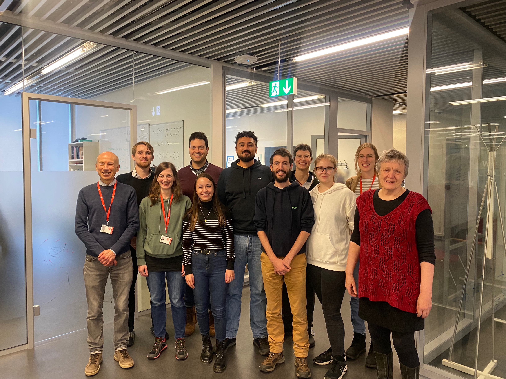

MoVeMnt: Mode(l)s of Verification and Monitorability
Icelandic Research Fund Project nr. 217987 (January 2021-December 2023)
Status: Ongoing
MoVeMnt is a 3-year project funded by the Icelandic Research Fund, starting in 2021.
The project is led by Luca Aceto (Reykjavik
University and Gran Sasso Science Institute), Antonis Achilleos (Reykjavik University),
Adrian Francalanza
(University of Malta), Anna Ingólfsdóttir (Reykjavik University), and
Karoliina Lehtinen (Aix-Marseille University)
It continues work from the TheoFoMon project.
The aims of MoVeMnt are to:
-
Examine the monitorability of hyperproperties. Besides the properties of a single execution or of the whole system, hyperproperties, which are properties of sets of traces, are a reasonable model for the execution of a system that may be distributed, or run several times.
-
Study monitors that give verdicts equipped with structure. That structure can be used to justify a conclusion, alter an execution trace, or extract a quantity from the system run, instead of simply giving a binary answer.
-
Determine the decidability and complexity of the monitorability of a property.
-
Assess the abilities of monitors that use more computational resources than regular monitors, such as various types of memory or clocks.
-
Find effective ways to combine different verification techniques to mitigate their respective limitations and verify a specification in the most appropriate manner.
-
Compare monitorability with other important and related techniques, such as learning and diagnosability.
Researchers
The research team includes, in alphabetical order,
Luca Aceto (Reykjavik University and Gran Sasso Science Institute, co-PI),
Antonis Achilleos (Reykjavik University, PI),
Elli Anastasiadi (PhD student at Reykjavik University),
Duncan Paul Attard (PhD student at the University of Malta and at Reykjavik University),
Angeliki Chalki (Reykjavik University, postdoctoral researcher),
Léo Exibard (Reykjavik University, postdoctoral researcher; now: Université de Marne-la-Vallée, maitre de conférences),
Adrian Francalanza (University of Malta, co-PI),
Anna Ingólfsdóttir (Reykjavik University, co-PI),
Karoliina Lehtinen (Aix-Marseille University, co-PI),
Mathias Ruggaard Pedersen (Reykjavik University, postdoctoral researcher),
Jana Wagemaker (Reykjavik University, postdoctoral researcher), and
Jasmine Xuereb (PhD student at the University of Malta and at Reykjavik University).

From the group's meeting in Reykjavik in November 2022.
Project-related events (in reverse chronological order)
-
Jana Wagemaker is visiting Reykjavik from August 13 to August 20, 2024
-
Léo Exibard is visiting Reykjavik from August 19 to August 23, 2024
-
Duncan Paul Attard is visiting Reykjavik from June 14 to June 26, 2024
-
Adrian Francalanza is visiting Reykjavik from June 20 to June 26, 2024
-
Léo Exibard is visiting Reykjavik from June 10 to June 26, 2024
-
Elli Anastasiadi is visiting Reykjavik from November 15 to December 2, 2023
-
We are organizing NLS, SLSS, and GandALF 2024 in Reykjavik from June 10 to June 23
-
Antonis Achilleos is PC co-chair for SLSS 2024
-
Adrian Francalanza and Antonis Achilleos are PC co-chairs for GandALF 2024
-
Antonis Achilleos is PC co-chair for GandALF 2023
-
Léo Exibard, Adrian Francalanza, and Jana Wagemaker visit Reykjavik University during the week from November 6 2022 to November 12.
-
We are organizing the Logic Colloquium 2022 in Reykjavik, from June 27 to July 1, 2022.
-
Antonis Achilleos gives an invited talk at VORTEX 2022.
-
Adrian Francalanza is co-chair of VORTEX 2022.
-
Antonis Achilleos gave an invited talk at LFCS 2022.
Publications
Books and edited volumes
-
Antonis Achilleos, Dario Della Monica (editors): Proceedings of the Fourteenth International Symposium on Games,
Automata, Logics, and Formal Verification, GandALF 2023, Udine, Italy, 18-20th September 2023. EPTCS 390, 2023
-
Antonis Achilleos, Adrian Francalanza (editors): Proceedings of the Fifteenth International
Symposium on Games, Automata, Logics, and Formal Verification, GandALF 2024, Reykjavik,
Iceland, 19-21th June 2024. EPTCS 409, 2024
Book chapters
-
Antonis Achilleos, Elli Anastasiadi, Adrian Francalanza, Karoliina Lehtinen and Mathias Ruggaard Pedersen. On Probabilistic Monitorability. Principles of Systems Design: Essays Dedicated to Thomas A. Henzinger on the Occasion of His 60th Birthday (2022).
[preprint]
Journal papers
-
Luca Aceto, Antonis Achilleos, Elli Anastasiadi, Adrian Francalanza, and Anna Ingólfsdóttir. Complexity results for modal logic with recursion via translations and tableaux. Logical Methods in Computer Science, 2024.
[link]
-
Luca Aceto, Ian Cassar, Adrian Francalanza, Anna Ingólfsdóttir.
Bidirectional Runtime Enforcement of First-Order Branching-Time Properties.
Logical Methods in Computer Science, 2023.
[available on arxiv]
-
Luca Aceto, Antonis Achilleos, Duncan Paul Attard, Léo Exibard, Adrian Francalanza, Anna Ingólfsdóttir. A monitoring tool for linear-time μHML. Science of Computer Programming, 2024.
[link]
-
L. Aceto, A. Achilleos, E. Anastasiadi and A. Ingólfsdóttir. Axiomatizing recursion-free, regular monitors.
Journal of Logical and Algebraic Methods in Programming, special issue devoted to selected papers from NWPT 2019, 2022.
[Publisher's version]
[Author's preprint]
Conference and workshop papers
-
Luca Aceto, Antonis Achilleos, Angeliki Chalki, and Anna Ingólfsdóttir. The complexity of
deciding characteristic formulae in van Glabbeek's branching-time spectrum. CSL 2025
[arxiv]
-
Luca Aceto, Antonis Achilleos, Elli Anastasiadi, Daniele Gorla, Adrian Francalanza, Jana Wagemaker. Centralized vs Decentralized Monitors for Hyperproperties. CONCUR 2024.
[publisher version]
[arxiv]
-
Antonis Achilleos and Angeliki Chalki. Counting Computations with Formulae: Logical Characterisations of Counting Complexity Classes. MFCS 2023.
[arxiv]
-
Eleni Bakali, Aggeliki Chalki, Sotiris Kanellopoulos, Aris Pagourtzis & Stathis Zachos. On the Power of Counting the Total Number of Computation Paths of NPTMs. TAMC 2024.
[arxiv]
-
Luca Aceto, Antonis Achilleos, Elli Anastasiadi, Adrian Francalanza, Anna Ingólfsdóttir.
Complexity through Translations for Modal Logic with Recursion.
GandALF 2022. [preprint]
-
Léo Exibard, Emmanuel Filiot, Ayrat Khalimov.
A Generic Solution to Register-bounded Synthesis with an Application to Discrete Orders.
ICALP 2022. [arxiv]
-
Antonis Achilleos, Léo Exibard, Adrian Francalanza, Karoliina Lehtinen and Jasmine Xuereb.
A Synthesis Tool for Optimal Monitors in a Branching-Time Setting.
Tool paper, in COORDINATION 2022.
[author preprint version]
-
Luca Aceto, Antonis Achilleos, Duncan Paul Attard, Léo Exibard, Adrian Francalanza and Anna Ingólfsdóttir
A Monitoring Tool for the Linear-Time μHML.
Tool paper, in COORDINATION 2022.
[author preprint version]
-
Elli Anastasiadi, Antonis Achilleos and Adrian Francalanza.
Monitoring Hyperproperties with Circuits.
Short paper, in FORTE 2022.
[author preprint version]
-
Luca Aceto and Anna Ingólfsdóttir.
Introducing Formal Methods to First-Year Students in Three Intensive Weeks.
Proceedings of Formal Methods Teaching, FMTea21 (Ferreira J.F., Mendes A. and Menghi C. eds.), Lecture Notes in Computer Science 13122, pp. 1-17, Springer, November 2021.
[Publisher's version]
[Publicly accessible version]
-
Duncan Paul Attard, Luca Aceto, Antonis Achilleos, Adrian Francalanza, Anna Ingólfsdóttir, Karoliina Lehtinen:
Better Late Than Never or: Verifying Asynchronous Components at Runtime.
DisCoTec 2021.
[available on HAL]
-
Antonis Achilleos and Mathias Ruggaard Pedersen:
Axiomatizations and Computability of Weighted Monadic Second-Order Logic.
LICS 2021.
[available on arxiv]
Other publications
-
Luca Aceto, Antonis Achilleos, Elli Anastasiadi, Adrian Francalanza, and Anna Ingolfsdottir. Satisfiability-checking of modal logic with recursion via translations and tableaux.
Presented at the Panhellenic Logic Symposium 2024.
-
Luca Aceto, Antonis Achilleos, Aggeliki Chalki, and Anna Ingólfsdóttir. The complexity of deciding characteristic formulae.
Presented at the Panhellenic Logic Symposium 2024.
-
Antonis Achilleos, Elli Anastasiadi, R. Govind, and Jana Wagemaker. On the expressiveness of hyperlogics.
Presented at the Panhellenic Logic Symposium 2024.
-
Elli Anastasiadi, Antonis Achilleos, Adrian Francalanza and Jasmine Xuereb.
Epistemic logic for verifying runtime verification communication protocols.
Presented at the Panhellenic Logic Symposium 2022.
-
Luca Aceto, Antonis Achilleos, Duncan Paul Attard, Léo Exibard, Adrian Francalanza, Karoliina Lehtinen.
Runtime monitoring for Hennessy-Milner logic with recursion over systems with data..
Presented at the Logic Colloquium 2022.
-
Antonis Achilleos, Eleni Bakali, Aggeliki Chalki, Aris Pagourtzis.
The complexity for hard counting problems with easy decision version.
Presented at the Logic Colloquium 2022.
Software tools
-
DetectEr, an RV to synthesise montors for branching-time and linear-time recHML properties.
-
A Synthesis Tool for Optimal Monitors in a Branching-Time Setting